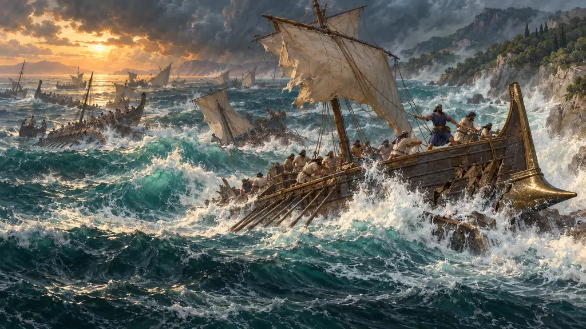
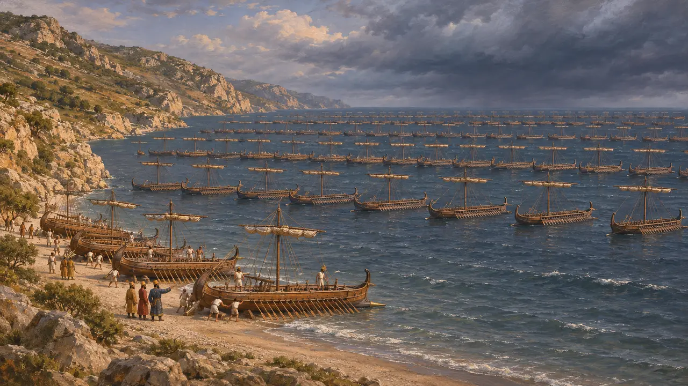
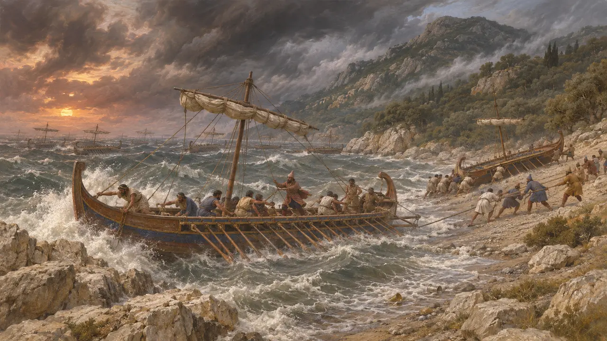
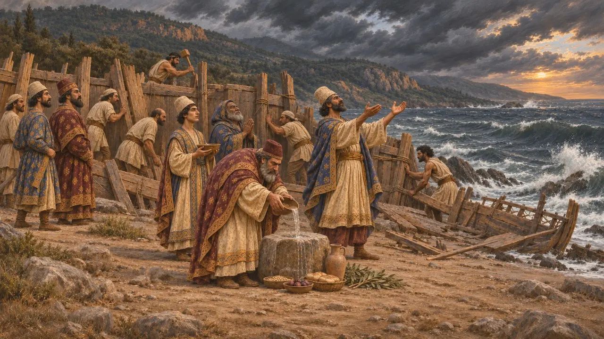
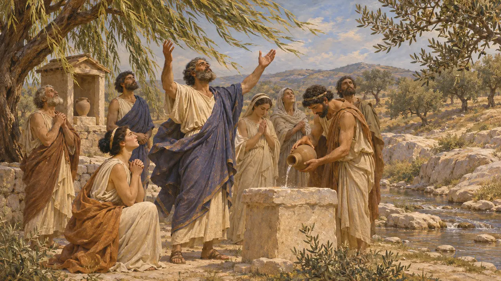
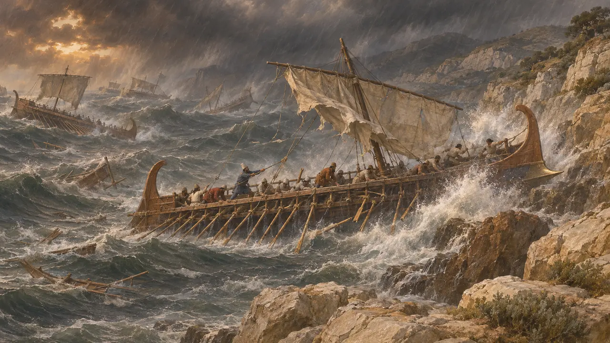

العاصفة قبالة مغنيسيا
العاصفة التي حطّمت جزءًا من أسطول خشايارشا على ساحل مغنيسيا في ثيساليا، 480 ق.م
في اللعبة: المستوى 10: البوابات الحارّة
على الأرجح في أواخر صيف 480 ق.م، وبينما كان أسطول خشايارشا يتجه جنوبًا نحو أرتيميسيوم، باغتته عاصفة شرقية وهو راسٍ على ساحل ماغنيسيا المكشوف، وظلت تهبّ ثلاثة أيام. يذكر هيرودوت أن أربعمئة سفينة حربية على الأقل فُقدت، إضافةً إلى الطواقم وسفن المؤن والكنوز. وقد أضعفت العاصفة أسطول الملك قبيل بدء القتال في أرتيميسيوم وثرموبيلاي.
في اللعبة: تعرض اللعبة العاصفة حدثًا من عام 480 ق.م وتكرر رقم هيرودوت البالغ أربعمئة سفينة على الأقل. وهذا الرقم له وحده؛ ويشكك فيه المؤرخون، ولم يبقَ أي سجل فارسي للخسائر.

أسطول أكبر من شاطئه
رواية قديمةيقول هيرودوت إن الأسطول بلغ ساحل مغنيسيا بين كاسثانايا ورأس سيبياس. كان الشاطئ قصيراً، فلم يُسحب إلى البرّ سوى الصف الأول من السفن، وبقي الباقي راسياً في عرض البحر، بثمانية صفوف في العمق بحسب روايته. ويُفهم من وصفه أن الأسطول لم يكن له ميناء محميّ على ذلك الامتداد من الساحل.
Herodotus 7.188

ثلاثة أيام من الهلسبونتياس
رواية قديمةيقول هيرودوت إنه عند الفجر، بعد طقس هادئ، بدأ البحر يغلي وضربت ريح شرقية قوية، سمّاها السكان المحليون الهلسبونتياس، السفن الراسية. فسحب الملاحون الذين رأوها مقبلة سفنهم إلى الشاطئ، لكن كثيرًا منها اندفع نحو الصخور المسماة أفران بيليون ونحو الشواطئ. وقد أثرى أحد ملاك الأرض المحليين، أمينوكليس، لاحقًا من أكواب الذهب والفضة التي قذفتها الأمواج إلى أرضه.
Herodotus 7.188, 7.190-191

المجوس والريح
رواية قديمةينقل هيرودوت أن القادة أقاموا سياجًا من الحطام، وأن المجوس قدّموا القرابين وتلوا التعاويذ للريح. وذبحوا كذلك للإلهة ثيتيس وحوريات البحر، لأن الساحل قيل إنه مقدس لثيتيس. وفي اليوم الرابع هدأت العاصفة. ويضيف هيرودوت، مع شيء من الشك، أنها ربما سكنت من تلقاء نفسها.
Herodotus 7.191

بورياس، نسيب الأثينيين
أسطورة لاحقةقال الأثينيون إن وحيًا أمرهم بأن يستنجدوا بصهرهم. وفهموا أن المقصود بوريّاس، ريح الشمال، الذي تزوج في الأسطورة الأميرة الأثينية أوريثيا. فصلّوا له، ونسبوا إليه العاصفة فيما بعد، وبنوا له مزارًا بجوار نهر إليسوس. ولا يحسم هيرودوت ما إذا كان بوريّاس هو السبب، والحكاية تعكس اعتزاز الأثينيين أكثر مما تعكس طقس عام 480 ق.م.
Herodotus 7.189

كم سفينة خُسرت فعلًا
متنازع عليهينسب هيرودوت إلى أسطول الملك 1,207 من السفن ثلاثية المجاديف، ويقول إن ما لا يقل عن أربعمئة منها تحطّم هنا، وإن مئتين أخريين فُقدت في عاصفة ثانية قبالة إيوبيا. ويرى كثير من المؤرخين أن الرقم الابتدائي مضخَّم، وأن خسائر العاصفة تساعد في خفض مجموع هيرودوت إلى حجم يلائم القتال اللاحق. ويقبل آخرون بوقوع خسائر فادحة لكنهم لا يقبلون أرقامه الدقيقة.
J. F. Lazenby, The Defence of Greece 490-479 BC, 1993
المصادر
- Herodotus 7.183-192
- Herodotus 8.13
- Herodotus 7.89
- J. F. Lazenby, The Defence of Greece 490-479 BC, 1993
- P. Green, The Greco-Persian Wars, 1996
- P. Briant, From Cyrus to Alexander, 2002